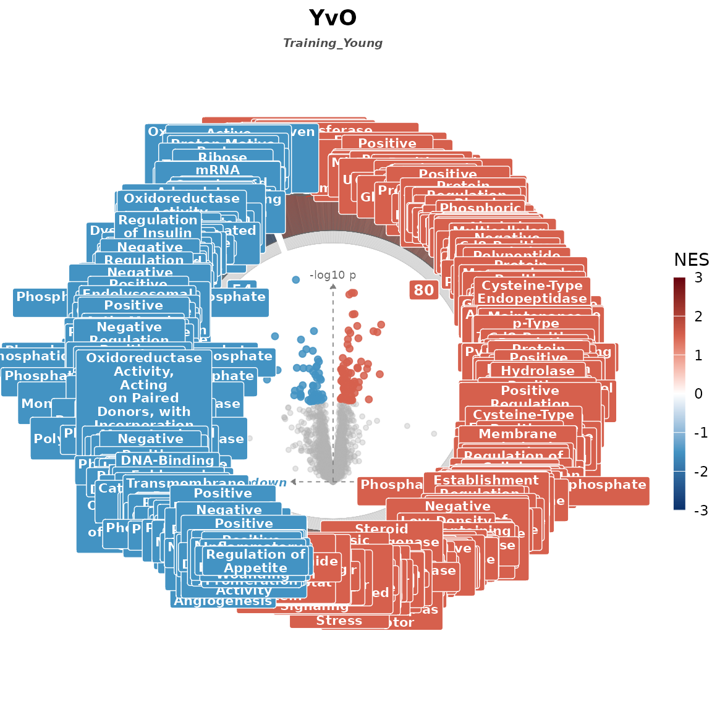
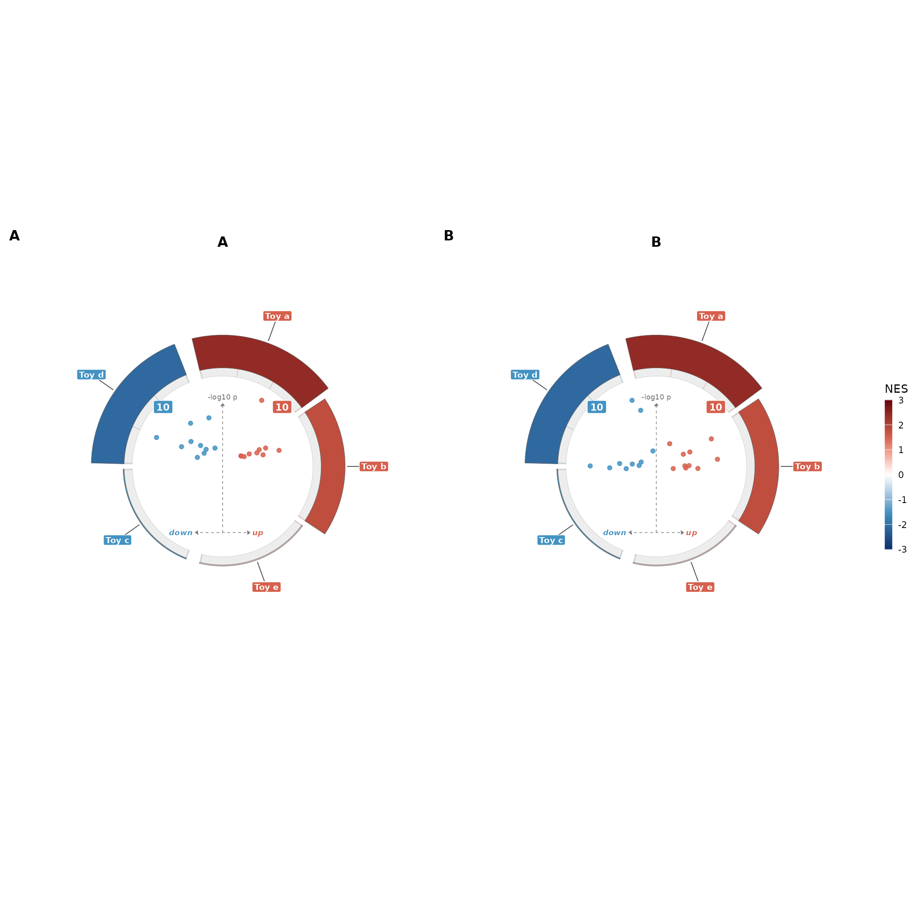

enrichVolcano draws one composite figure from two tidy
tables that you have already computed: a differential-abundance (DA)
table and an enrichment table. Computing the enrichment is delegated to
whichever upstream tool fits your study — fgsea,
clusterProfiler, enrichR, or your own.
This vignette walks the end-to-end path on the bundled YvO proteomics
example (Young vs Old human plasma; one contrast,
Training_Young).
Read the two tables
The package ships small slices of four datasets under
inst/extdata/examples/. system.file() resolves
to the install path.
library(enrichVolcano)
da_path <- system.file("extdata", "examples", "yvo_da.csv",
package = "enrichVolcano"
)
en_path <- system.file("extdata", "examples", "yvo_enrichment.csv",
package = "enrichVolcano"
)
da <- read.csv(da_path)
en <- read.csv(en_path)
str(da, max.level = 1, give.attr = FALSE)
#> 'data.frame': 8452 obs. of 6 variables:
#> $ gene : chr "MMP24OS" "ESYT2" "ILVBL" "FSD2" ...
#> $ contrast : chr "Training_Young" "Training_Young" "Training_Young" "Training_Young" ...
#> $ logFC : num -0.27417 0.13438 0.09914 0.02035 -0.00493 ...
#> $ P.Value : num 0.472 0.359 0.535 0.877 0.981 ...
#> $ adj.P.Val: num 0.726 0.658 0.772 0.95 0.995 ...
#> $ pi_eq2 : num 0.814 0.871 0.94 0.997 1 ...
str(en, max.level = 1, give.attr = FALSE)
#> 'data.frame': 5383 obs. of 6 variables:
#> $ contrast: chr "Training_Young" "Training_Young" "Training_Young" "Training_Young" ...
#> $ database: chr "GO_BP" "GO_BP" "GO_BP" "GO_BP" ...
#> $ pathway : chr "mitochondrial electron transport, NADH to ubiquinone" "proton motive force-driven mitochondrial ATP synthesis" "proton transmembrane transport" "ribose phosphate biosynthetic process" ...
#> $ NES : num -2.73 -2.61 -2.51 -2.18 2.13 ...
#> $ padj : num 2.58e-08 2.58e-08 2.58e-08 1.56e-06 1.51e-05 ...
#> $ size : int 39 60 85 93 90 39 28 28 117 38 ...The YvO DA table is a limma moderated-t output: gene,
contrast, logFC, P.Value,
adj.P.Val, pi_eq2. The enrichment table is in
the fgsea schema with a per-row contrast column: contrast,
database, pathway, NES,
padj, size. There is one contrast here
(Training_Young).
Slice to a single contrast
volcano_ring() draws one composite per call.
Multi-contrast composing is what volcano_ring_grid() is
for.
Map column names
The YvO DA carries adj.P.Val, not padj. The
shared padj_col argument names both the adjusted-p
column on the DA side and the adjusted-p column on the enrichment side,
so they need to agree. Two options: pass
padj_col = "adj.P.Val" (but then the enrichment side needs
that column too), or rename the DA column to padj once at
the boundary. The second is simpler.
Draw the composite
suppressMessages(
volcano_ring(da1, en1, title = "YvO", subtitle = ctr)
)
#> Warning: Duplicate values in "pathway"; keeping the row with the lowest padj per term.
#> ℹ 494 duplicate rows dropped.
The figure puts the volcano in the centre. NES-coloured arcs around
it encode each enriched pathway: arc fill is NES (red up, blue down by
default), arc thickness is -log10(padj), and the up/down
split lives on the right vs left semicircle. The pre-filtering of which
pathways appear is up to you — every row of enrich_df
becomes one arc.
A multi-contrast grid
When you have several contrasts to show side by side, pass two named
lists to volcano_ring_grid(). The function calls
volcano_ring() once per panel and composes them with
patchwork::wrap_plots().
set.seed(1)
toy_volc <- function(seed) {
set.seed(seed)
data.frame(
gene = paste0("G", 1:20),
contrast = "toy",
logFC = c(rnorm(10, 2), rnorm(10, -2)),
P.Value = c(runif(10, 0, 0.01), runif(10, 0, 0.01)),
padj = c(runif(10, 0, 0.04), runif(10, 0, 0.04))
)
}
toy_enrich <- function(seed) {
set.seed(seed)
data.frame(
pathway = paste0("HALLMARK_TOY_", LETTERS[1:5]),
NES = c(2.4, 1.8, -1.5, -2.1, 0.4),
padj = c(0.001, 0.02, 0.01, 0.005, 0.5),
size = c(40, 30, 25, 35, 18),
leading_edge = c(
"G1;G2;G3;G4", "G5;G6", "G11;G12",
"G13;G14;G15;G16", "G7;G17"
)
)
}
g <- suppressMessages(volcano_ring_grid(
list(A = toy_volc(1), B = toy_volc(2)),
list(A = toy_enrich(1), B = toy_enrich(2)),
ncol = 2
))
g$plot
Common knobs
The full argument list is in ?volcano_ring, but four
come up constantly:
-
magnitude = "neg_log_padj"(default) or"size"— what controls arc thickness. -
genes_colandgenes_sep— override the tick-line auto-detect. Auto-detect walksleading_edge,leadingEdge,core_enrichment,Genesin that order. -
label_mode—"none","top_per_direction","by_significance","by_genes"— controls which volcano points are labelled. -
theme = volcano_ring_theme(palette = "viridis")— swap the palette without re-passing every aesthetic.
What this package does not do
enrichVolcano does not run the enrichment for you. If
you need to compute it, here are the canonical paths:
# fgsea (Korotkevich 2021, DOI 10.1101/060012):
ranks <- df$t; names(ranks) <- df$gene
res <- fgsea::fgseaMultilevel(pathways, stats = ranks)
# clusterProfiler::gseGO (Yu 2012; Wu 2021):
res <- clusterProfiler::gseGO(
geneList = sort(setNames(df$logFC, df$gene), decreasing = TRUE),
ont = "BP", OrgDb = org.Hs.eg.db::org.Hs.eg.db
)
# enrichR (Chen 2013; Kuleshov 2016):
res <- enrichR::enrichr(genes, "GO_Biological_Process_2023")[[1]]The result of any of these is a tidy frame you can pass straight to
volcano_ring(). See vignette("input-contract")
for column names that work out of the box.